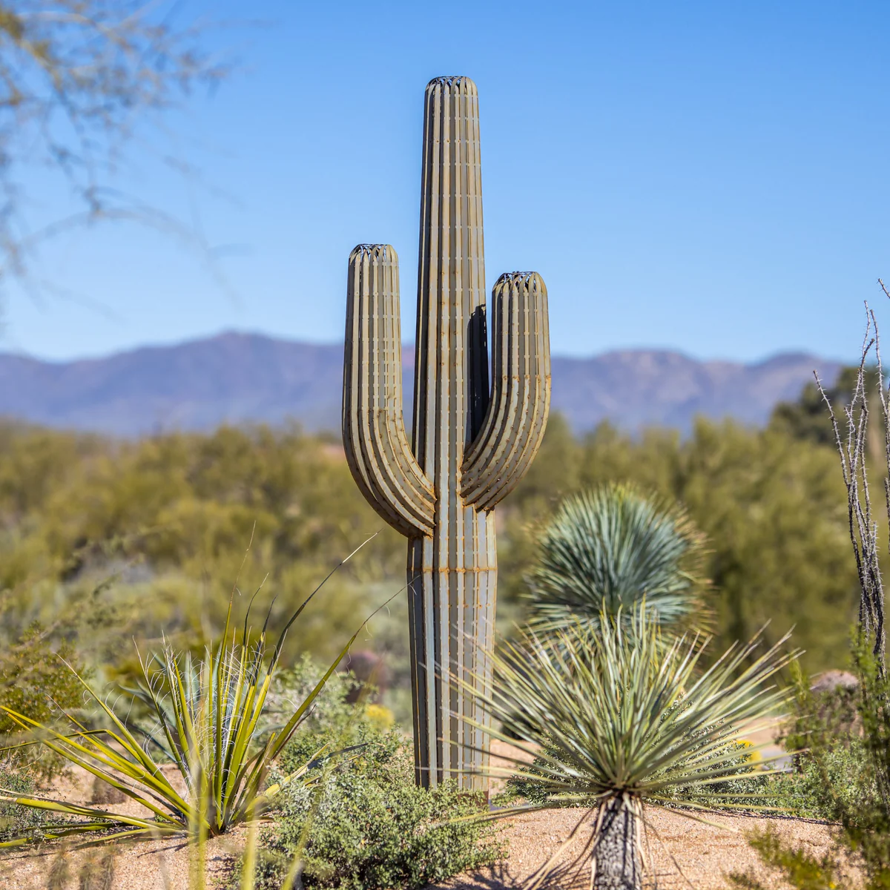

Saguaro
- These cacti can grow to be over 12 meters tall!
- They are native to the Sonoran Desert!
- Saguaro cacti can live up to 150-175 years!

Prickly Pear
- These cacti can grow fruit and flowers!
- Despite being cacti, prickly pears are vulnerable to the temperature change of global warming.
- They use their flattened stems to store water and generate flowers.
Jumping cholla
- These cacti can occasionally grow edible fruit!
- These cacti easily "shed" themselves, which is why they can be so dangerous to even be near.
- These cacti are used in some medicines!